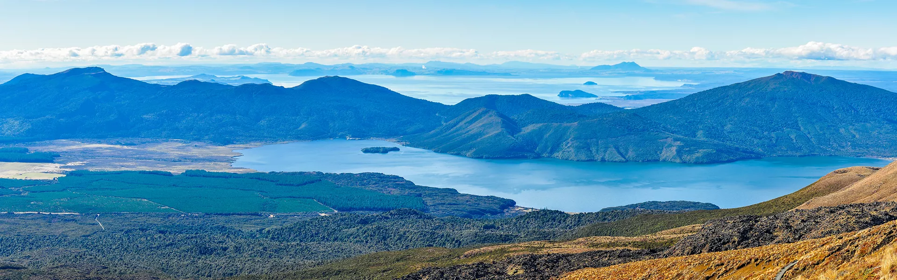

About New Zealand

New Zealand is a country packed full of wondrous beauty, amazing wildlife, and a distinct culture. Be it the Fyordlands in the south, or the geysers and volcanic activity in Rotorua, or the pristine and beautiful beaches of the Coromandel, New Zealand is full of nature's best. New Zealand has 11 great walks, which are well-maintained areas where visitors can walk (or sometimes canoe) through some of the most scenic areas. New Zealand is home to 94 birds, found exclusively there. (there are another 76 that are native but not exclusive to New Zealand) Off the coast, there are dolphins, penguins, and whales swarming around the islands. New Zealand also has been home to the Māori for over a thousand years, they’re culture and religion has deep ties to New Zealand’s nature and is well preserved through today. Read more about New Zealand below!
This is some more info about New ZEALAND
- Milford Sound
- Arguably the crowning jewel of New Zealand’s great walks, thousands of years of glaciers and rivers have flowed through, creating massive Fiordland. Great mountains jut up through the placid water and tower above, “A place where waterfalls tumble from sheer cliffs and mountains rise straight from the sea — Milford Sound feels like another world entirely.” — Lonely Planet.
- Lake Taupō
- The largest lake in New Zealand, Lake Taupō, is the crater left by a super volcano, around 18000 years ago. Its waters are full of fish, especially Rainbow and Brown trout. It is a beautiful area and cool.
- Rotorua
- Rotorua is a part of the Taupō volcano, it is extremely active with geysers, mud pools, and more. The Māori used it for cooking their food underground. Using the heat of the Earth to their advantage.
- The Coromandel
- The Coromandel is a stretch of coastline known for its pristine beaches and amazing natural landscape. A favorite beach of mine, Wangamata is a large stretch of white sand with an island that you can wade out to on one side, and then an estuary on the other. The Coromandel is home to Cathedral Cove or better known as the microsoft homescreen. Really cool, and I love spending time there.